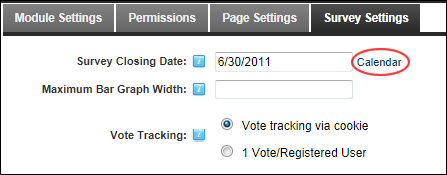

Setting Survey Closing Date
How to set the closing date for survey responses. Once the close date is reached, the Submit Survey link is hidden. Survey results are displayed to users who are authorized to view results.
-
- Select the Survey Settings tab.
- At Survey Closing Date, click the Calendar link and select the final date that a response can be submitted.

-
Click the Update button.
Related Topics:
-
"Working with the Calendar"